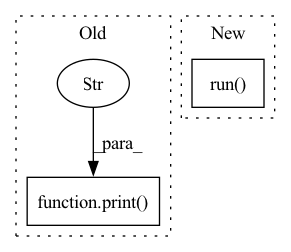

Pattern ID :5774
Before Change
end = time.time()
elapsed_time = end - start
print(f"Received response of {len(outputs)} output tensors:" )
print(f"Round-trip time took {elapsed_time * 1000.0:.4f} milliseconds")
for i, out in enumerate(outputs):
print(f" output //{i}: shape {out.shape}")After Change
_LOGGER.info(f"Sending {len(inputs)} input tensors to {engine.url}/run")
start = time.time()
outputs = engine.run( inputs)
end = time.time()
elapsed_time = end - start
_LOGGER.info(f"Round-trip time took {elapsed_time * 1000.0:.4f} milliseconds")In pattern: SUPERPATTERN
Frequency: 6
Non-data size: 2
Instances Fragment ID: 20339863
Project Name: neuralmagic/deepsparse
Commit Name: 3b58e70a3fade9a80357433900ec17d2ba510c21
Time: 2021-04-28
Author: bfineran@users.noreply.github.com
File Name: examples/flask/client.py
M Class Name: AnonimousClass
N Class Name: AnonimousClass
M Method Name: main(0)
N Method Name: main(0)
M Parent Class:
N Parent Class:
M File Name: examples/flask/client.py
N File Name: examples/flask/client.py
M Start Line: 91
M End Line: 114
N Start Line: 146
N End Line: 163
Before Change
_check_cuobjdump_output(expected[1], is_ptx=True)
finally:
if IS_WINDOWS:
print("Not wiping extensions build folder because Windows" )
else:
shutil.rmtree(temp_dir)
if old_envvar is None:After Change
if IS_WINDOWS:
// rmtree returns permission error: [WinError 5] Access is denied
// on Windows, this is a word-around
subprocess.run( ["rm", "-rf", temp_dir], stdout=subprocess.PIPE)
else:
shutil.rmtree(temp_dir)
if old_envvar is None: Fragment ID: 20339874
Project Name: pytorch/pytorch
Commit Name: 54eedf6fa6a5104dbdf92f868b0236c43c90dd21
Time: 2023-02-01
Author: huydhn@gmail.com
File Name: test/test_cpp_extensions_jit.py
M Class Name: TestCppExtensionJIT
N Class Name: TestCppExtensionJIT
M Method Name: _run_jit_cuda_archflags(3)
N Method Name: _run_jit_cuda_archflags(3)
M Parent Class: common.TestCase
N Parent Class: common.TestCase
M File Name: test/test_cpp_extensions_jit.py
N File Name: test/test_cpp_extensions_jit.py
M Start Line: 148
M End Line: 169
N Start Line: 148
N End Line: 189
Before Change
def remove_build_path():
if sys.platform == "win32":
print("Not wiping extensions build folder because Windows" )
return
default_build_root = torch.utils.cpp_extension.get_default_build_root()
if os.path.exists(default_build_root):
shutil.rmtree(default_build_root)After Change
if IS_WINDOWS:
// rmtree returns permission error: [WinError 5] Access is denied
// on Windows, this is a word-around
subprocess.run( ["rm", "-rf", default_build_root], stdout=subprocess.PIPE)
else:
shutil.rmtree(default_build_root)
Fragment ID: 20339875
Project Name: pytorch/pytorch
Commit Name: 54eedf6fa6a5104dbdf92f868b0236c43c90dd21
Time: 2023-02-01
Author: huydhn@gmail.com
File Name: test/test_cpp_extensions_jit.py
M Class Name: AnonimousClass
N Class Name: AnonimousClass
M Method Name: remove_build_path(0)
N Method Name: remove_build_path(0)
M Parent Class:
N Parent Class:
M File Name: test/test_cpp_extensions_jit.py
N File Name: test/test_cpp_extensions_jit.py
M Start Line: 33
M End Line: 38
N Start Line: 34
N End Line: 44
Before Change
def test_robustify_global_model():
for alpha in [0, 0.5, 1]:
model_list = create_fake_model_list(20)
print(
f"alpha = {alpha}, aggregation = {SLSGDDefense(trim_param_b=3, alpha=alpha, option_type=2).run(model_list, base_aggregation_func=AggregationFunction.FedAVG, global_model=model_list[0][1])} "
)
if __name__ == "__main__":
test_defense_option2()After Change
def test_robustify_global_model():
for alpha in [0, 0.5, 1]:
model_list = create_fake_model_list(20)
aggregated_results = SLSGDDefense(
trim_param_b=3, alpha=alpha, option_type=2
).run(
model_list,
base_aggregation_func=AggregationFunction.FedAVG,
extra_auxiliary_info=model_list[0][1],
)
print(f"alpha = {alpha}, aggregation = {aggregated_results} ")
if __name__ == "__main__": Fragment ID: 20339872
Project Name: fedml-ai/fedml
Commit Name: b2a8e2947d4ee9f51331000f057ce03a746fac72
Time: 2022-07-18
Author: chaoyanghe.com@gmail.com
File Name: python/fedml/core/security/test/defense/test_slsgd_defense.py
M Class Name: AnonimousClass
N Class Name: AnonimousClass
M Method Name: test_robustify_global_model(0)
N Method Name: test_robustify_global_model(0)
M Parent Class:
N Parent Class:
M File Name: python/fedml/core/security/test/defense/test_slsgd_defense.py
N File Name: python/fedml/core/security/test/defense/test_slsgd_defense.py
M Start Line: 32
M End Line: 34
N Start Line: 35
N End Line: 43
Before Change
self.public_ip = get("http://api.ipify.org").text
self.local_ip = socket.gethostbyname(socket.gethostname())
print(f"REDIS: local IP: {self.local_ip}" )
print(f"REDIS: public IP: {self.public_ip}")
// self.__wait_for_connections()
def __trainer_handshake(self, sock):After Change
print(f"INFO REDIS: public IP: {self.public_ip}")
Thread(target=self.__trainer_thread, args=(), kwargs={}, daemon=True).run()
Thread(target=self.__rollout_workers_thread, args=(), kwargs={}, daemon=True).run()
def __trainer_thread(self, ):
This waits for a TrainerInterface to connect Fragment ID: 20339873
Project Name: trackmania-rl/tmrl
Commit Name: 9a47b1f5cce898ffc7e40f58d009bad8753d6b4b
Time: 2020-09-19
Author: yann.bouteiller@hotmail.fr
File Name: agents/agents/tm.py
M Class Name: RedisServer
N Class Name: RedisServer
M Method Name: __init__(1)
N Method Name: __init__(3)
M Parent Class:
N Parent Class:
M File Name: agents/agents/tm.py
N File Name: agents/agents/tm.py
M Start Line: 144
M End Line: 154
N Start Line: 249
N End Line: 260
Before Change
// TODO:
// Avoid looping through dataset twice
print("Fitting..." )
for chunk in dataset.chunk_dataset(
select_fields=self.vector_fields, filters=filters, chunksize=chunksize
):
vectors = self.get_field_across_documents(After Change
select_fields=self.vector_fields,
show_progress_bar=True,
)
pup.run()
return
Fragment ID: 20339866
Project Name: relevanceai/relevanceai
Commit Name: f51b2915298b5dbfdbf5c72d6557293fcd138894
Time: 2022-08-28
Author: joseph.twin@relevance.ai
File Name: relevanceai/operations_new/cluster/batch/ops.py
M Class Name: BatchClusterOps
N Class Name: BatchClusterOps
M Method Name: run(4)
N Method Name: run(4)
M Parent Class: ClusterOps,BatchClusterTransform
N Parent Class: ClusterOps,BatchClusterTransform
M File Name: relevanceai/operations_new/cluster/batch/ops.py
N File Name: relevanceai/operations_new/cluster/batch/ops.py
M Start Line: 64
M End Line: 81
N Start Line: 71
N End Line: 91